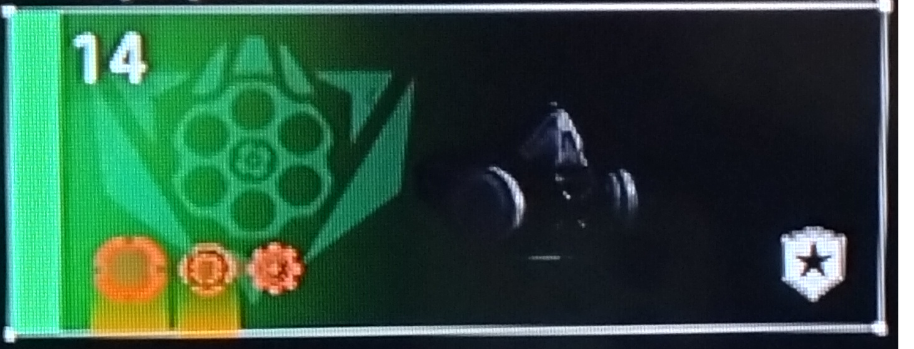
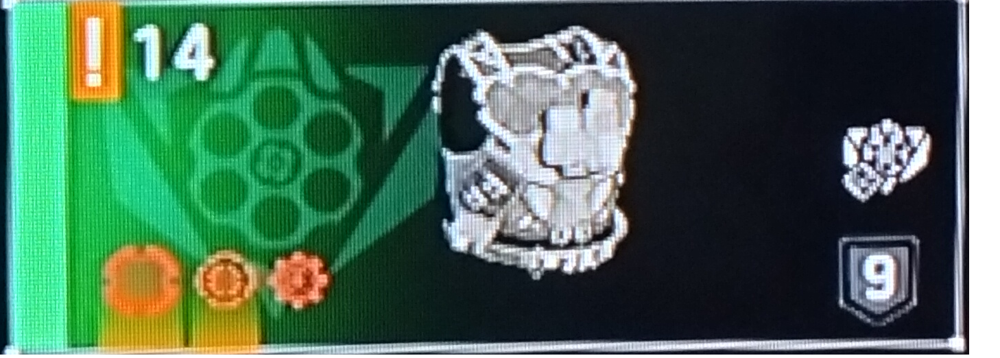
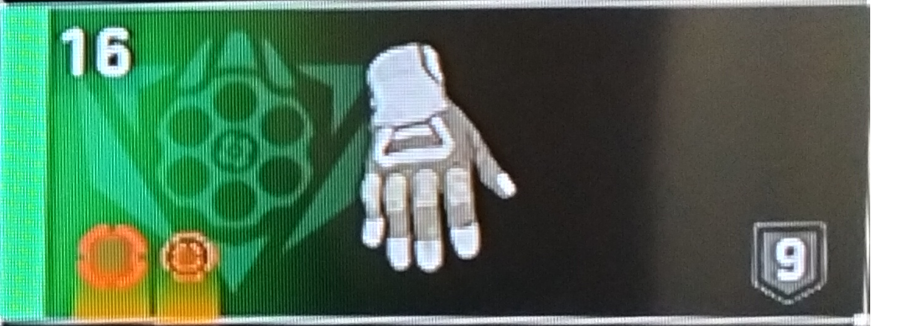
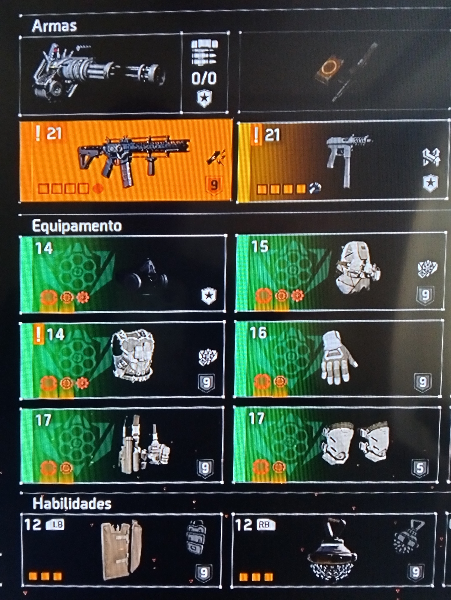
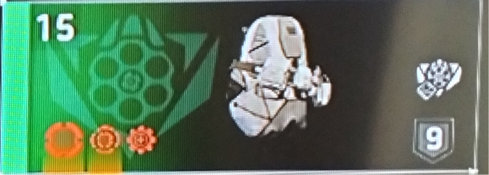
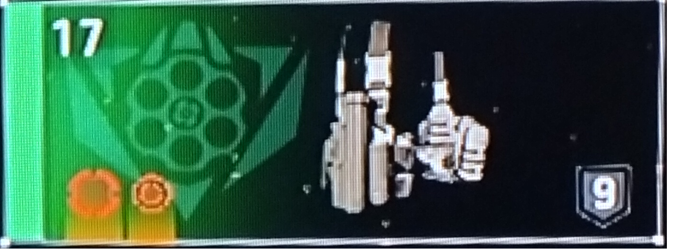
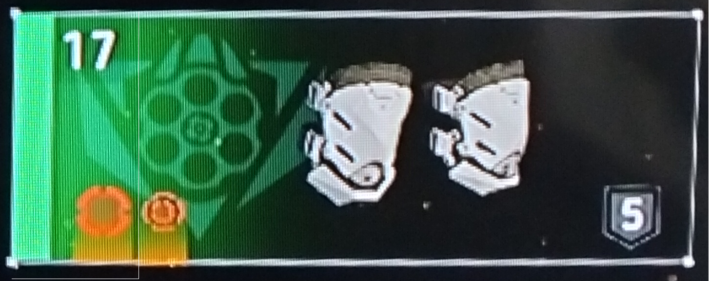

Arma automática
Build feita para manter pressão constante e acumular dano em alvos resistentes.
Uma das builds mais fortes e mais populares do jogo para quem quer dano alto, ritmo agressivo e ótima performance em quase todo o conteúdo PvE. Esta página foi pensada como guia prático: o que usar, por que usar e como pilotar a build no dia a dia.
Build feita para manter pressão constante e acumular dano em alvos resistentes.
Excelente quando você consegue manter o alvo na mira e empilhar bônus de forma estável.
Se avançar demais ou perder cobertura, você cai rápido em conteúdo pesado.
Brilha quando o time segura controle de campo e deixa você focar dano.
Esta é uma base forte e fácil de entender. Depois você pode adaptar conforme suas peças, exóticas e seu estilo de jogo.
Visual completo da build com peças reais utilizadas na versão meta.




Dano sustentado com AR focado em crítico.



A build Striker gosta de armas que mantenham cadência, estabilidade e tempo alto em alvo. Quanto melhor você segura a mira, melhor ela escala.
A lógica da build é simples: primeiro você garante uma base estável de chance crítica, depois empilha dano crítico e mantém o máximo possível de tempo em alvo. Não adianta só ter números altos no papel se a arma estiver desconfortável para controlar.
A Striker não é só vestir as peças. O resultado vem muito de mira, escolha de alvo e disciplina de posicionamento.
Priorize inimigos que fiquem expostos por mais tempo. Isso ajuda a manter ritmo e evita perder dano em trocas ruins.
A build é ofensiva, mas não é build de correr sem pensar. Use pressão com disciplina e avance só quando o campo estiver controlado.
É melhor manter dano contínuo e seguro do que forçar jogadas e morrer cedo em lendária, raid ou incursão.
A próxima evolução natural é criar as páginas detalhadas das outras builds: Turret + Drone, PvP SMG, Suporte para Paradise Lost e Status Effect para lendária. Assim o site começa a ganhar profundidade de verdade.